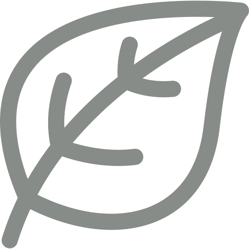
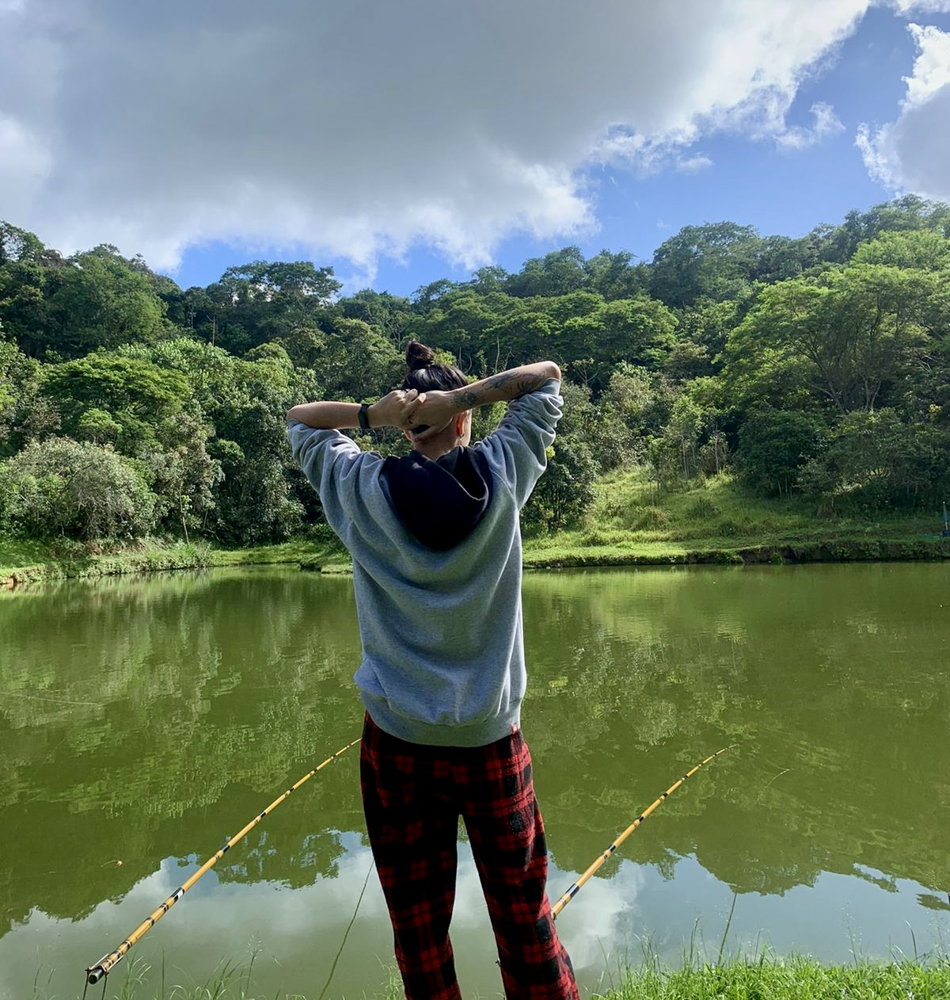
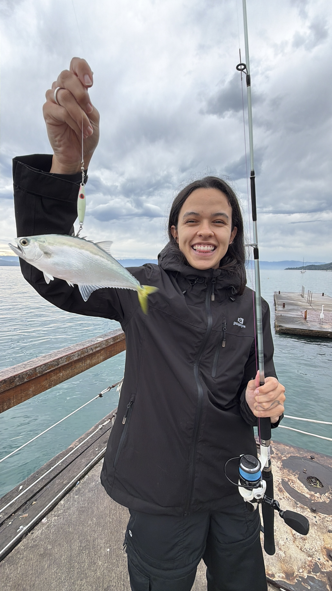

UM PORTAL PARA APRENDER A PESCAR MELHOR
Onde a paixão pela pesca encontra o conhecimento
No Fishing Lab, a curiosidade encontra o lago. Descubra os peixes, prepare seu equipamento e aprenda a pescar em pesqueiros com mais consciência.

Para iniciantes. Com respeito à natureza.
APRENDA - TRÊS CAMINHOS, UMA BOA BASE
Antes de lançar a linha, explore.
01 - CONHEÇA QUEM HABITA O LAGO
Espécies de peixes
Da tilápia a pirarara: hábitos, alimentação e particularidades de seis peixes de pesqueiro.
02 - PREPARE SUA PESCARIA
Equipamentos
Entenda a função de cada item e escolha um conjunto adequado ao peixe e ao pesqueiro.
03 - APRENDA NA PRÁTICA
Técnicas de pesca
Leia o ambiente, conheça iscas e montagens e aprenda a cuidar do peixe em cada etapa.

DE ONDE VEM O FISHING LAB
Muito além de uma pescaria
Comecei a pescar na infância, acompanhando meu pai e meu tio. Mais do que esperar fisgada, era um jeito de estar perto deles e descobrir, aos poucos, o que acontecia debaixo d'água.
Alguns anos depois, voltei a praticar ao lado da minha esposa. A curiosidade voltou junto: por que um peixe prefere certa isca? Como escolher o equipamento? O que muda de um pesqueiro para outro?
Essa curiosidade e a vontade de aprender mais sobre pescaria deram origem ao Fishing Lab: um espaço para organizar descobertas e compartilhar o aprendizado.